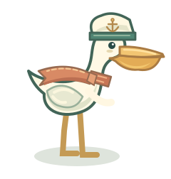

PELICAN KNIGHT / DUNGEONSmall worlds, new adventures
选一段冒险，出发。
从海风小镇到地下迷宫。
这里收藏着我们正在生长的游戏。
其他冒险
不同玩法，各自成长鹈鹕骑士
最初的海岸冒险。横版城镇、六类武器与自行车，沿着熟悉的海风继续前进。
v0.3.2 · 横版冒险开始游戏 ↗
波次远征
30 波海岸战斗。收集精粹、选择增强卡片，在精英与首领之间构筑这一局的力量。
v0.4.0 · 俯视战斗开始游戏 ↗
科研大冒险
把求学与科研变成一场肉鸽旅程。探索成长路线与卡片设计，游戏尚在筹备。
v0.0.1 · 设计阶段查看项目 ↗
进度留在你的浏览器各游戏独立保存。地牢版支持导出与导入；从本地试玩切换到线上时，可以用存档文件接续旅程。
持续开发中的世界这是开发版本合集。旧游戏保持各自已公开版本，地牢远征逐步扩充；科研大冒险暂未提供可玩内容。